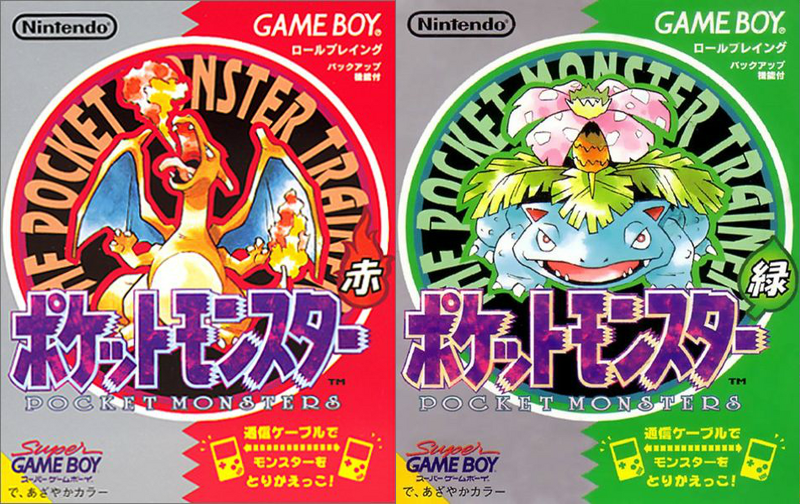
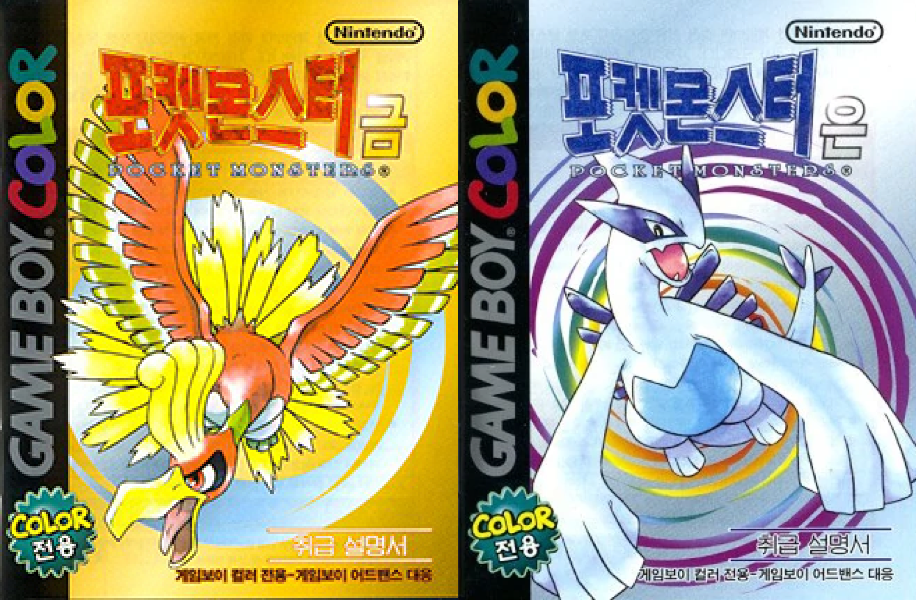
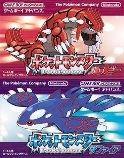
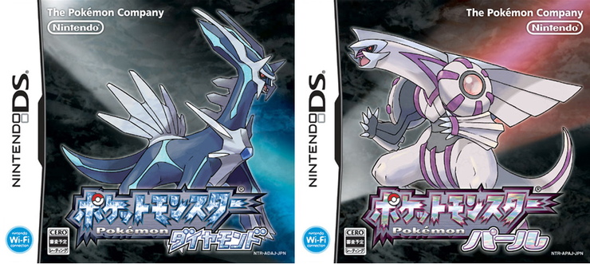

"잡은 몬스터를 통신 케이블로 교환! 동료를 모으는 롤플레잉 등장!"
포켓몬스터 레드/그린은 포켓몬 시리즈는 곤충 채집을 좋아하던 '타지리 사토시'가 어린 시절의 추억을 살려 개발한 게임입니다.
1995년 초대작 포켓몬스터 레드/그린을 시작으로 2021년 현재까지도 게임의 신작이 발매 중입니다.
출하 당시 성적은 저조한 편이었지만, 만화와 애니메이션, 입소문을 계기로 폭발적인 인기를 끌게 되었습니다.
태초마을로 유명한 관동지방을 배경으로 주인공 레드는 파이리, 꼬부기, 이상해씨 중 하나의 포켓몬을 골라
악의 조직 로켓단, 체육관 관장들과 차례차례 싸워 이기고 결국 포켓몬 챔피언이 됩니다.
등장하는 전설의 포켓몬은 프리져, 썬더, 파이어, 뮤츠이며,
시리즈의 첫번째 작품이지만 이후 작품의 뼈대는 이때 전부 세워졌다고 해도 무방합니다.
타입 간의 상성, 악의 조직 격파, 체육관 관장, 챔피언 성취, 포켓몬의 통신교환과 대전은 이후 작품에서도 전체적인 틀로 자리잡습니다.
"새로운 시나리오와 맵으로, 새로운 포켓몬이 속속히 등장!!"
포켓몬스터 금/은은 전작과 다른 새로운 지방인 성도지방을 배경으로 치코리타, 브케인, 리아코 셋 중 하나의 포켓몬을 데리고 시작합니다.
전설의 포켓몬은 루기아, 칠색조이며 전작에 없던 새로운 100마리의 포켓몬과 새로운 타입인 강철타입과 악타입이 추가되었습니다.
금/은 버전의 차이에 따라 등장하는 포켓몬의 종류에 차이가 있는데,
예를 들면 금 버전은 가디, 윈디가 등장하고 은 버전에서는 식스테일, 나인테일이 등장합니다.
덕분에 포켓몬 교환 시스템이 더 적극적으로 사용되기 시작했습니다.
또한 요일, 시간, 낮, 밤에 따라 다른 이벤트가 발생합니다.
예를 들면 같은 지역이라도 시간대가 다르면 다른 포켓몬이 출현하고,
낮에는 조용히 있던 경비원 NPC가 밤에는 수상하다며 배틀을 걸어오기도 합니다.
금/은 버전의 특별한 점은 바로 전 버전인 레드/그린 버전의 관동지방으로 넘어갈 수 있는 것이었는데,
금/은 버전 이후에는 기술력은 더 발전했지만 다른 지역으로의 이동이 불가능하단 점을 생각하면 더욱 각별합니다.
유명한 것으로는 금빛시티 금빛체육관의 관장 꼭두가 있습니다.
포켓몬 금/은 게임을 해봤다면 사용할수록 강력해지는 구르기 기술과 자체회복기 우유마시기를 쓰는
밀탱크 덕에 대부분의 유저가 어려운 난이도로 한번쯤은 고전했다고 합니다.


"'포켓몬스터' 신작 게임보이 어드벤스에 드디어 등장!!"
포켓몬스터 루비/사파이어는 포켓몬스터 시리즈의 3세대 작품입니다.
이전작과 다른 지방인 호연지방이 배경이며 새로운 포켓몬들도 많이 등장하며 스타팅 포켓몬은 아차모, 나무지기, 물짱이이며 전설의 포켓몬은 그란돈, 가이오가입니다.
총괄 디렉터였던 타지리 사토시가 일선에서 물러나고 마스다 준이치가 총괄 디렉터를 맡은 최초의 작품이기도 합니다.
새로운 악의 조직인 마그마단/아쿠아단이 버전별로 다르게 등장하며, 마그마단은 모든 바다를 소멸시키는 것/ 아쿠아단은 모든 땅을 바다로 덮어버리는 것을 목표로 합니다.
이 작품의 아쉬운 부분은 포켓몬들의 공격력과 방어력 등의 계산구조가 완전히 달라져 이전 세대의 포켓몬과 통신할 수 없다는 것입니다.
때문에 서구권에서는 이 시기를 포켓몬 멸종기라고 부르기도 합니다.
한국에서는 게임기인 게임보이 어드밴스가 대중화되지 않은데다 한글화가 없었기 때문에 금/은 버전과 후술할 디아루가/펄기아 버전보다 인지도가 낮습니다.
어떤 이들은 이를 이용해 다음 세대인 디아루가/펄기아 버전에서 PvP배틀 시, 잘 알려지지 않은 3세대 포켓몬을 데려와 상대방을 당황시키는 경우도 종종 있었다고 합니다.
"신오지방에서 눈을 뜨는 새로운 포켓몬들"
포켓몬스터 디아루가/펄기아는 포켓몬스터 4세대 작품입니다. 원래 명칭은 포켓몬스터 다이아몬드/펄이지만 한국으로 들어올 때 상표 문제로 개명당했습니다.
신오지방을 배경으로 하며 악의 조직 갤럭시단을 격파하고 챔피언 난천에게 도전한다.
디아루가/펄기아의 악당은 시간과 공간을 다루는 전설의 포켓몬을 이용해 세계를 지배하려 하는데, 이때까지의 단순한 악역에 비하면
꽤 그럴듯한 서사를 지니고 있습니다.
스타팅 포켓몬은 모부기, 불꽃숭이, 팽도리이며 전설의 포켓몬은 디아루가, 펄기아, 기라티나, 유크시, 엠라이트, 아그놈, 히드런 등 상당히 많습니다.
본격적으로 wi-fi 무선 통신으로 PvP배틀을 즐기는 유저가 대폭 늘어났으며, 처음으로 3D 그래픽을 도입한 시기이기도 합니다.
자칫 어색할 수도 있었지만 도트 그래픽과 적절히 섞어 사용해 훌륭하다는 평가가 주류입니다.
한국에서는 디아루가/펄기아 버전으로 포켓몬 시리즈에 입문한 사람이 많은데, 닌텐도DS의 홍보가 활발해 기기 판매량이 가장 높았고 한글화가 이뤄졌기 때문입니다.
